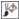

ыстрые ссылки на процедуры, описанные на этой странице:
• |
• |
• |
• |
Инструменты рисования позволяют имитировать множество способов рисования и живописи. Например, можно нанести мазки кисти, имитирующие акварель, пастель, фломастеры или ручки. По умолчанию мазки кисти добавляются к активному объекту или фону. Мазки кисти можно также отобразить как отдельные объекты. Для получения сведений об объектах см. раздел Создание объектов.
Режимы слияния определяют способ перехода цветов фона в основные цвета. Режимы слияния позволяют различными способами объединять эти цвета и тем самым создавать новые цвета и эффекты. Для получения дополнительных сведений о режимах слияния см. раздел Общие сведения о режимах слияния.
От выбора инструмента рисования и типа кисти зависит вид мазка кисти на изображении. Если рисование выполняется с помощью заготовки кисти, атрибуты кисти инструмента рисования предварительно определены.
Цвет мазка кисти определяется текущим цветом фона, который отображается в области управления цветом. Можно выбрать цвет переднего плана, если взять образец цвета из изображения. Для получения дополнительных сведений о выборе цветов см. раздел Работа с цветом.
Кроме рисования с использованием цвета, можно применять изображения и текстуры, используя при рисовании заливку. Кроме того, можно нанести мазок кисти на путь. Для получения дополнительных сведений см. раздел Нанесение мазков кисти на пути.
| Рисование с помощью заготовки кисти |
1. |
В наборе инструментов выберите инструмент Краска |
2. |
Откройте меню выбора Категория кисти на панели свойств и выберите
категорию кисти.
|
3. |
Выберите заготовку типа кисти в списке Тип кисти на панели свойств.
|
4. |
5. |
Перетащите курсор в окне изображения.
|
Если с помощью кисти требуется рисовать только горизонтальные или вертикальные прямые линии, удерживайте нажатой клавишу Ctrl при перетаскивании и нажмите Shift, чтобы изменить направление. |
На панели свойств имеются параметры, которые можно использовать
для изменения атрибутов заготовки кисти. После изменения какого-
либо атрибута имя кисти изменится на Специальная кисть. Для
получения дополнительных сведений о специальных кистях см.
раздел Создание специальных кистей.
|
Можно использовать эту процедуру для создания объекта. Выберите
Объект |
Для выбора заготовки кисти можно также щелкнуть образец мазка
кисти в окне настройки Художественное оформление. Если окно
настройки Художественное оформление закрыто, выберите пункт
Окно |
Можно быстро выбрать квадратную или круглую форму кисти с
помощью кнопки Круглый кончик |
| Рисование с помощью образца цвета, взятого с изображения |
1. |
Выберите инструмент Пипетка |
2. |
Щелкните цвет в окне изображения.
|
3. |
В наборе инструментов выберите инструмент Краска |
4. |
Откройте меню выбора Категория кисти на панели свойств и выберите
категорию кисти.
|
5. |
Выберите заготовку типа кисти в списке Тип кисти на панели свойств.
|
6. |
Перетащите курсор в окне изображения.
|
| Рисование с помощью заливки |
1. |
В наборе инструментов выберите инструмент Заливка |
2. |
На панели свойств выберите тип заливки.
|
3. |
В наборе инструментов выберите инструмент Клонирование |
4. |
На панели свойств откройте меню выбора Категория кисти и выберите
инструмент Клонирование из заливки .
|
5. |
Перетащите курсор в окне изображения.
|
Для рисования можно использовать любой тип заливки. Для
получения сведений о заливках см. раздел Заливка изображений.
|
| Изменение режима слияния |
1. |
В наборе инструментов выберите инструмент рисования.
|
2. |
Выберите режим слияния в списке Режим слияния на панели свойств.
|
Для получения дополнительных сведений о режимах слияния см.
раздел Общие сведения о режимах слияния.
|
Copyright 2012 Corel Corporation. Все права защищены.